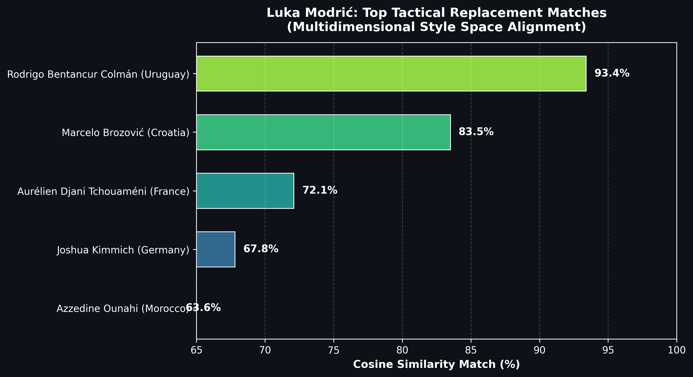
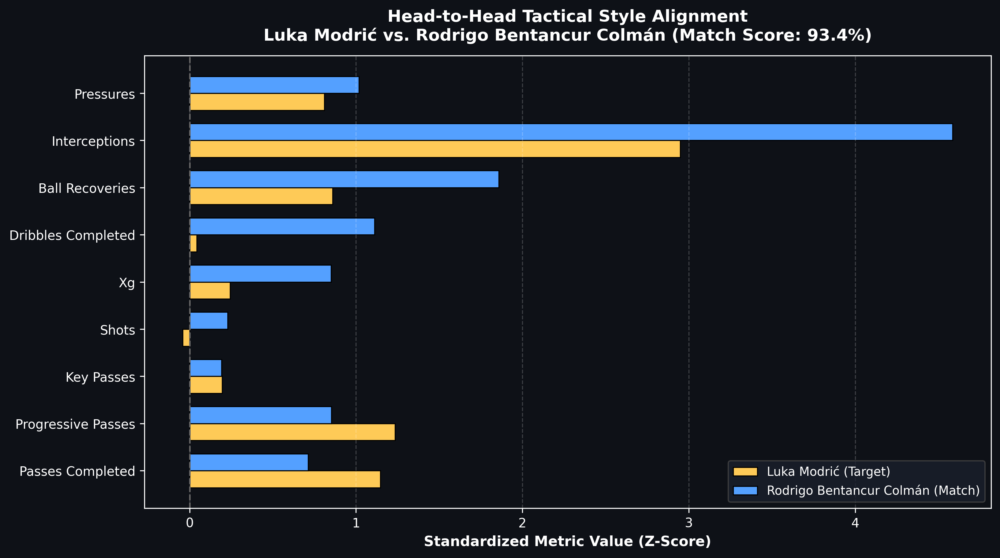

FootballScout: Player Similarity Engine
An algorithmic scouting search engine built to discover tactical clones, replacement candidates, and positional archetypes from competitive match datasets using multidimensional vector spaces.
1. Problem Statement & Scouting Rationale
When a marquee starter leaves a club through transfer, contract expiry, or injury, recruitment departments are pressured to act quickly. Conventional visual scouting often over-indexes on raw counting stats (goals, assists) that depend heavily on team quality, resulting in expensive misfits.
FootballScout eliminates possession bias by evaluating the functional shape and skill ratio of each player's per-90 metrics. If a team loses an elite tempo controller (e.g. Luka Modrić), the engine identifies which available players distribute, progress, and press in identical relative proportions.
2. Mathematical & Vector Methodology
Each player is modeled as a 9-dimensional style vector spanning passing circulation, vertical ball progression, shot assist creation, finishing arrival, 1v1 dribbles, and defensive disruption.
1. Per-90 Normalization
All counting events are normalized to standard 90-minute rates to neutralize unequal playing time and substitution appearances.
2. Z-Score Standardization
Metrics are standardized to zero mean and unit variance, preventing high-volume passing metrics from dominating low-frequency creative stats.
3. Cosine Metric
Evaluates the angle between multidimensional vectors, capturing skillset proportions rather than team possession share.
A score of 100% denotes identical tactical distribution. Unlike Euclidean distance, which penalizes players in low-possession teams, cosine similarity measures pure functional affinity.
3. Empirical Case Study: Replacing Luka Modrić
We tested the engine during the 2022 FIFA World Cup to find replacements for Croatia's midfield orchestrator Luka Modrić (7 matches, 650 mins, 59.1 passes completed p90, 8.5 progressive passes p90, 15.4 pressures p90).

Figure 1: Top 5 Central Midfield candidates ranked by Cosine Similarity match percentage.
| Rank | Player | National Team | Role | Similarity | Minutes |
|---|---|---|---|---|---|
| Target | Luka Modrić | Croatia | Central Midfielder | 100.0% | 650' |
| 1 | Rodrigo Bentancur | Uruguay | Center Defensive Midfield | 93.4% | 236' |
| 2 | Marcelo Brozović | Croatia | Center Defensive Midfield | 83.5% | 602' |
| 3 | Aurélien Tchouaméni | France | Right Defensive Midfield | 72.1% | 701' |
| 4 | Joshua Kimmich | Germany | Right Defensive Midfield | 67.8% | 303' |
Head-to-Head Style Alignment: Modrić vs. Bentancur (#1 Match)
Comparing their standardized Z-scores reveals striking tactical alignment: both operate well above tournament average in vertical ball progression, passing volume, and ball recoveries, with moderate finishing volume.

Figure 2: Normalized Z-Score comparison across 9 dimensions for Modrić vs. Bentancur (93.4% match).
4. Production CLI & Reusable Module
The complete algorithm is packaged in src/models/player_similarity.py with a full Command Line Interface (CLI) for headless terminal execution:
Or import programmatically into any data product or dashboard: